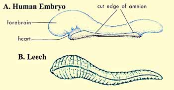
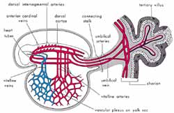
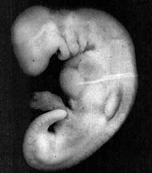

A) The Quran on Human Embryonic Development: |
In the Holy Quran, God speaks about the stages of man’s embryonic development: |
We created man from an extract of clay. Then We made him as a drop in a place of settlement, firmly fixed. Then We made the drop into an alaqah (leech, suspended thing, and blood clot), then We made the alaqah into a mudghah (chewed substance)… 1 (Quran, 23:12-14)
Literally, the Arabic word alaqah has three meanings: (1) leech, (2) suspended thing, and (3) blood clot.
In comparing a leech to an embryo in the alaqah stage, we find similarity between the two2 as we can see in figure 1. Also, the embryo at this stage obtains nourishment from the blood of the mother, similar to the leech, which feeds on the blood of others.3
 |
Figure 1: Drawings illustrating the similarities in appearance between a leech and a human embryo at the alaqah stage. (Leech drawing from Human Development as Described in the Quran and Sunnah, Moore and others, p. 37, modified from Integrated Principles of Zoology, Hickman and others. Embryo drawing from The Developing Human, Moore and Persaud, 5th ed., p. 73.) |
The second meaning of the word alaqah is “suspended thing.” This is what we can see in figures 2 and 3, the suspension of the embryo, during the alaqah stage, in the womb of the mother.
Figure 2: We can see in this diagram the suspension of an embryo during the alaqah stage in the womb (uterus) of the mother. (The Developing Human, Moore and Persaud, 5th ed., p. 66.) (Click on the image to enlarge it.) | |
Figure 3: In this photomicrograph, we can see the suspension of an embryo (marked B) during the alaqah stage (about 15 days old) in the womb of the mother. The actual size of the embryo is about 0.6 mm. (The Developing Human, Moore, 3rd ed., p. 66, from Histology, Leeson and Leeson.) |
|

The third meaning of the word alaqah is “blood clot.” We find that the external appearance of the embryo and its sacs during the alaqah stage is similar to that of a blood clot. This is due to the presence of relatively large amounts of blood present in the embryo during this stage4 (see figure 4). Also during this stage, the blood in the embryo does not circulate until the end of the third week.5 Thus, the embryo at this stage is like a clot of blood.
Figure 4: Diagram of the primitive cardiovascular system in an embryo during the alaqah stage. The external appearance of the embryo and its sacs is similar to that of a blood clot, due to the presence of relatively large amounts of blood present in the embryo. (The Developing Human, Moore, 5th ed., p. 65.) (Click on the image to enlarge it.) |  |
So the three meanings of the word alaqah correspond accurately to the descriptions of the embryo at the alaqah stage.
The next stage mentioned in the verse is the mudghah stage. The Arabic word mudghah means “chewed substance.” If one were to take a piece of gum and chew it in his or her mouth and then compare it with an embryo at the mudghah stage, we would conclude that the embryo at the mudghah stage acquires the appearance of a chewed substance. This is because of the somites at the back of the embryo that “somewhat resemble teethmarks in a chewed substance.”6 (see figures 5 and 6).
Figure 5: Photograph of an embryo at the mudghah stage (28 days old). The embryo at this stage acquires the appearance of a chewed substance, because the somites at the back of the embryo somewhat resemble teeth marks in a chewed substance. The actual size of the embryo is 4 mm. (The Developing Human, Moore and Persaud, 5th ed., p. 82, from Professor Hideo Nishimura, Kyoto University, Kyoto, Japan.) |  |
Figure 6: When comparing the appearance of an embryo at the mudghah stage with a piece of gum that has been chewed, we find similarity between the two. |
How could Muhammad have possibly known all this 1400 years ago, when scientists have only recently discovered this using advanced equipment and powerful microscopes which did not exist at that time? Hamm and Leeuwenhoek were the first scientists to observe human sperm cells (spermatozoa) using an improved microscope in 1677 (more than 1000 years after Muhammad ). They mistakenly thought that the sperm cell contained a miniature preformed human being that grew when it was deposited in the female genital tract.7
Professor Emeritus Keith L. Moore8 is one of the world’s most prominent scientists in the fields of anatomy and embryology and is the author of the book entitled The Developing Human, which has been translated into eight languages. This book is a scientific reference work and was chosen by a special committee in the United States as the best book authored by one person. Dr. Keith Moore is Professor Emeritus of Anatomy and Cell Biology at the University of Toronto, Toronto, Canada. There, he was Associate Dean of Basic Sciences at the Faculty of Medicine and for 8 years was the Chairman of the Department of Anatomy. In 1984, he received the most distinguished award presented in the field of anatomy in Canada, the J.C.B. Grant Award from the Canadian Association of Anatomists. He has directed many international associations, such as the Canadian and American Association of Anatomists and the Council of the Union of Biological Sciences.
In 1981, during the Seventh Medical Conference in Dammam, Saudi Arabia, Professor Moore said: “It has been a great pleasure for me to help clarify statements in the Quran about human development. It is clear to me that these statements must have come to Muhammad from God, because almost all of this knowledge was not discovered until many centuries later. This proves to me that Muhammad must have been a messenger of God.”9 (To view the RealPlayer video of this comment click here ).
Consequently, Professor Moore was asked the following question: “Does this mean that you believe that the Quran is the word of God?” He replied: “I find no difficulty in accepting this.”10
During one conference, Professor Moore stated: “….Because the staging of human embryos is complex, owing to the continuous process of change during development, it is proposed that a new system of classification could be developed using the terms mentioned in the Quran and Sunnah (what Muhammad said, did, or approved of). The proposed system is simple, comprehensive, and conforms with present embryological knowledge. The intensive studies of the Quran and hadeeth (reliably transmitted reports by the Prophet Muhammad’s companions of what he said, did, or approved of) in the last four years have revealed a system for classifying human embryos that is amazing since it was recorded in the seventh century A.D. Although Aristotle, the founder of the science of embryology, realized that chick embryos developed in stages from his studies of hen’s eggs in the fourth century B.C., he did not give any details about these stages. As far as it is known from the history of embryology, little was known about the staging and classification of human embryos until the twentieth century. For this reason, the descriptions of the human embryo in the Quran cannot be based on scientific knowledge in the seventh century. The only reasonable conclusion is: these descriptions were revealed to Muhammad from God. He could not have known such details because he was an illiterate man with absolutely no scientific training.”